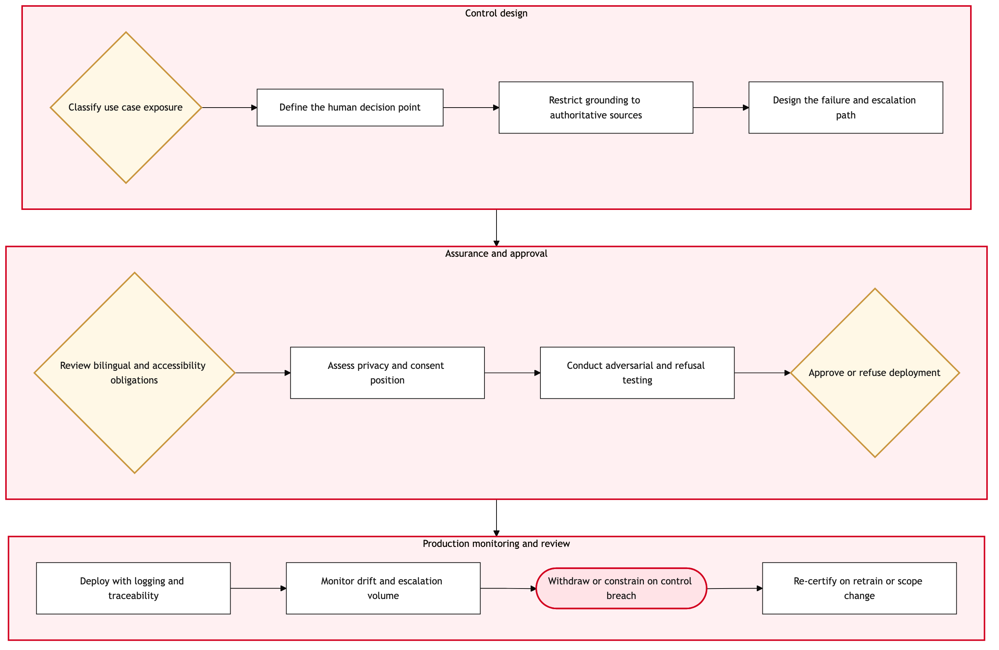

Updated 2026-08-18
AI Governance and Human In Loop Control Design
Process flow
Click to zoom

Process steps
▼
Phase 1 — Control design
4 steps
| Step | Activity | Role | System | Input | Output | KPI | Dec | Exc | Pain point |
|---|---|---|---|---|---|---|---|---|---|
| 1.1 | Classify use case exposure | AI Governance Lead | ITSM PlatformC | Approved use case definition | Exposure classification covering customer, regulatory and safety impact | 100 percent of use cases classified before build | Y | N | Classification depends on a self-declared scope that tends to understate customer exposure |
| 1.2 | Define the human decision point | AI Governance Lead | ITSM PlatformC | Exposure classification and process map | Named human-in-loop control with an accountable role | Every customer-facing model has a named human decision point | N | N | Teams propose review-after-the-fact controls, which do not prevent the Moffatt failure mode |
| 1.3 | Restrict grounding to authoritative sources | Data Platform Engineer | Unity CatalogC | Candidate content and policy corpora | Allow-listed grounding sources with lineage | Zero customer-facing responses grounded on unapproved sources | N | N | Policy content is scattered across the web estate with no single authoritative version |
| 1.4 | Design the failure and escalation path | AI Governance Lead | ITSM PlatformC | Control design draft | Defined failure modes with a no-auto-send default and escalation route | Every model has a tested escalation path before release | N | N | Failure modes are specified in prose and are not testable as written |
▼
Phase 2 — Assurance and approval
4 steps
| Step | Activity | Role | System | Input | Output | KPI | Dec | Exc | Pain point |
|---|---|---|---|---|---|---|---|---|---|
| 2.1 | Review bilingual and accessibility obligations | Official Languages Advisor | ITSM PlatformC | Draft control design | Confirmation of English and French parity in model output | Full parity confirmed on 100 percent of customer-facing models | Y | N | Parity is treated as a translation step rather than as an architectural constraint |
| 2.2 | Assess privacy and consent position | Privacy Counsel | SAP Customer Data CloudA | Data inventory for the model | Privacy assessment covering PIPEDA and Quebec Law 25 | Privacy assessment completed before any production data access | N | N | Consent state lives with customer identity and is not natively visible to model pipelines |
| 2.3 | Conduct adversarial and refusal testing | ML Engineer | Databricks LakehouseB | Candidate model and control design | Test evidence covering misstatement and refusal behaviour | Zero unescalated misstatements in the adversarial test set | N | N | There is no standing adversarial suite, so each team writes its own tests |
| 2.4 | Approve or refuse deployment | AI Governance Board | ITSM PlatformC | Complete assurance pack | Deployment decision with named accountable owner | No customer-facing model deployed without board approval | Y | N | Board cadence can become the critical path on delivery timelines |
▼
Phase 3 — Production monitoring and review
4 steps
| Step | Activity | Role | System | Input | Output | KPI | Dec | Exc | Pain point |
|---|---|---|---|---|---|---|---|---|---|
| 3.1 | Deploy with logging and traceability | ML Engineer | AWSA | Approved model and control design | Model in production with full response logging | 100 percent of customer-facing responses logged and retrievable | N | N | Response logs and case records are not joined, so a complaint cannot be traced to a response |
| 3.2 | Monitor drift and escalation volume | ML Engineer | Databricks LakehouseB | Production telemetry | Drift and escalation report against control thresholds | Drift breach detected within 24 hours | N | N | Thresholds are set at launch and rarely revisited as behaviour changes |
| 3.3 | Withdraw or constrain on control breach | AI Governance Lead | ITSM PlatformC | Breach notification | Model withdrawn, constrained or re-approved | Control breach acted on within one business day | N | Y | There is no rehearsed withdrawal runbook, which is what made the 2024 removal disruptive |
| 3.4 | Re-certify on retrain or scope change | AI Governance Lead | ITSM PlatformC | Retrained model or extended scope | Re-certified control design | No model serves customers on an expired certification | N | N | Retraining is treated as a technical change and can bypass governance |
Swim lanes
AI Governance Lead1.1 1.2 1.4 3.3 3.4
Data Platform Engineer1.3
Official Languages Advisor2.1
Privacy Counsel2.2
ML Engineer2.3 3.1 3.2
AI Governance Board2.4
Systems touched
ITSM PlatformCUnity CatalogCSAP Customer Data CloudADatabricks LakehouseBAWSAAir Canada Virtual AssistantBSalesforce Service CloudA
Key performance indicators
- Every customer-facing model carries a named human decision point at 100 percent
- Zero customer-facing responses grounded on sources outside the allow list
- Control breach acted on within one business day
- Full English and French parity confirmed on all customer-facing models
- Complaint-to-response traceability achievable for 100 percent of logged interactions
Risks and control points
- Repeating the Moffatt liability where automation states a policy position the airline must then honour
- Grounding drift as policy content changes on the web estate without the allow list being updated
- Retraining bypassing governance and silently changing customer-facing behaviour
- Bilingual parity treated as translation rather than as a design constraint, creating an Official Languages exposure alongside the accuracy exposure
- Absent response-to-case traceability preventing defence of a specific interaction under challenge
Air Canada Process Wiki — process and systems reference compiled from public sources
for IT Application Management and User Support pre-sales discovery.
Built 2026-08-21. Every system carries an evidence tier: tier C is an industry pattern and tier U is an open
question, and neither should be asserted as fact about Air Canada without confirmation in discovery.
Not affiliated with or endorsed by Air Canada. Air Canada, Aeroplan and Altitude are trademarks of Air Canada.